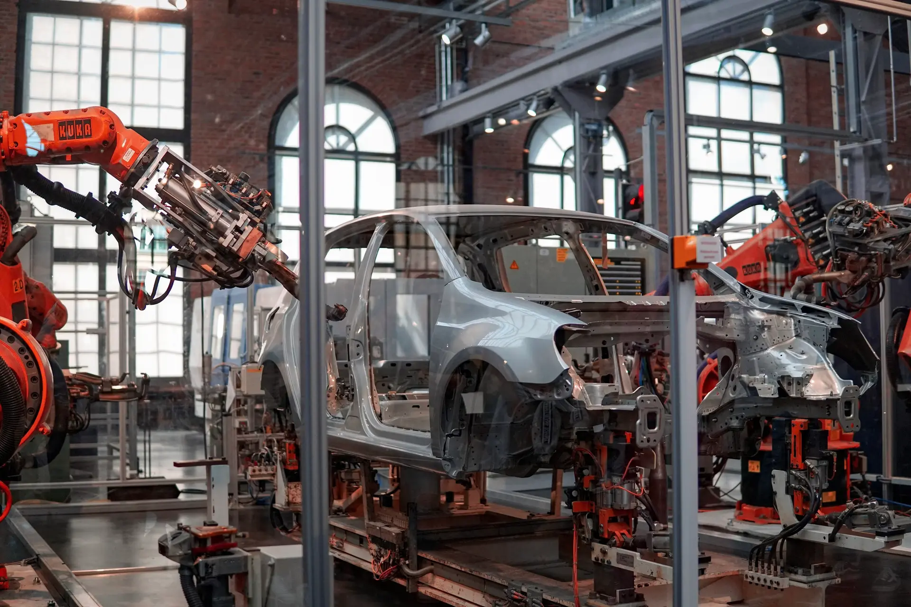

Perfil de ingreso

Perfil de ingreso
La personas aspirantes a ingresar a la carrera de Ingeniería Mecatrónica ofertada por el Instituto Tecnológico de Saltillo, deben haber finalizado su preparación de bachillerato poseer mentalidad creativa, orientado a la solución de problemas prácticos de la realidad nacional y global más específicamente de su entorno, visión para identificar áreas de oportunidad y desarrollo, mostrar interés por la protección al medio ambiente, así como las siguientes cualidades:
Puntos relevantes
- Rasgos de personalidad:
- Respeto, tolerancia y ánimo de trabajar en equipo.
- Empatía con los problemas de la realidad social y la sustentabilidad.
- Mentalidad de superación constante.
- Conocimientos generales:
- Física de nivel bachillerato de acuerdo con el marco curricular común de la educación media superior vigente.1
- Matemáticas de nivel bachillerato de acuerdo con el marco curricular común de la educación media superior vigente.1
- Manejo de las TIC
- Idioma inglés básico
- Habilidades:
- Pensamiento crítico
- Capacidad de observar, analizar y sintetizar problemas
- Lectura, comprensión y redacción de textos
- Iniciativa para la investigación
1 Marco curricular común de la escuela media superior vigente. https://educacionmediasuperior.sep.gob.mx/propuestaMCCEMS
Entry Profile
Prospective students applying for the Electronics Engineering program offered by the Instituto Tecnológico de Saltillo must have:
- Academic Requirements:
- Completed high school education (baccalaureate).
- A creative mindset focused on solving practical problems, both in national/global contexts and their immediate environment.
- Ability to identify areas of opportunity and development.
- Demonstrated interest in environmental protection.
- Personal Attributes:
- Respect, tolerance, and teamwork orientation.
- Empathy toward societal challenges and sustainability issues.
- Commitment to continuous self-improvement.
- General Knowledge:
- High school-level Physics (aligned with the current Common Core Curriculum for Upper Secondary Education).
- High school-level Mathematics (aligned with the current Common Core Curriculum for Upper Secondary Education).
- Basic proficiency in Information and Communication Technologies (ICT).
- Basic English language skills.
- Skills:
- Critical thinking.
- Problem observation, analysis, and synthesis.
- Reading comprehension and technical writing.
- Initiative for research.